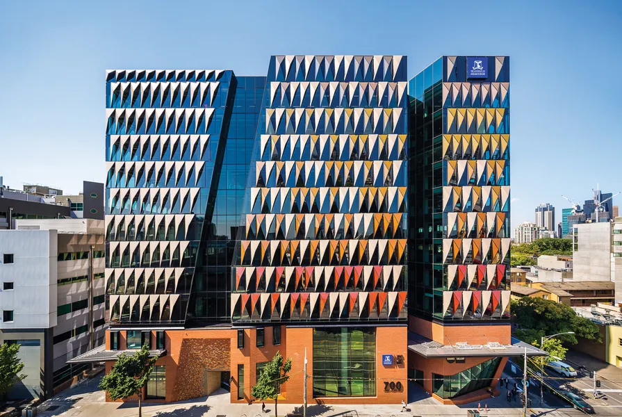
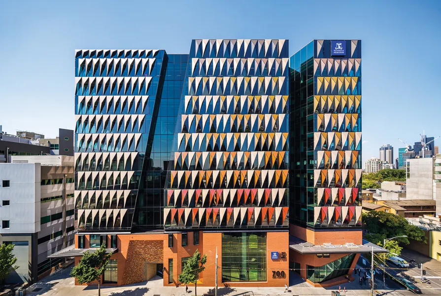

I will start as an Assistant Professor (i.e. 'Lecturer' in Australia) at the University of Melbourne in 2026. Fill out this form to express your interest in working with me!
*Note that I will not be able to reply to everyone. However, rest assured, I have seen and reviewed your materials!How do I apply?
At UniMelb, you will need a letter of support from me in order to apply. As a result, you should either fill out the google form above or email me directly. Include your CV, transcript(s) (unofficial is fine), and a research introduction or statement regarding your interests. If I think we are a good initial fit, then I may ask for more information from you or ask us to conduct an interview over Zoom!
Doing Your PhD at UniMelb
There are several reasons why doing your PhD at Melbourne might be a good fit.
Firstly, you will be fully funded (tuition+stipend) working with me. The Australian government also supports much of your PhD.
This is hugely important for your PhD because it means that we have much more research freedom to pursue our ideas, compared to other funding systems.
Second, Melbourne is a great place to do HCI research. The HCI Group at Melbourne is very large compared to most other schools with 16+ faculty members, so there is ample opportunity to collaborate. If ranking is important, it is ranked 11th in HCI, and 19th and 38th best overall globally.
Third, your PhD is 3.5-4 years here with a sole focus on just doing research. You will not have required coursework or teaching during your PhD. This might be a pro or con depending on you.
Fourth, PhD students in Australia are generally well supported with good work-life and academic freedom. Melbourne is one of the world’s most livable cities (currently ranked 4th globally), with a free tram system in the city center and a vibrant, diverse culture. It has a somewhat high cost of living, depending on your comparison point; in sum, it is roughly similar to Pittsburgh Pennsylvania, US / Houston Texas, US / Brussels, Belgium / Manchester UK...
What kinds of students are you hiring?
The most important things are that you:
- communicate & write well and have some sort of research experience, even if it did not produce strong output. In my opinion, simply the ability to frame, write, and present research well is equally as important as conducting it. I insist on having students who do not have to rely on generative models to write well.
- have good (relevant, novel, interesting, feasible, ...) ideas. Through items like your research statement, interview, or recommendation letters, you can show that you are able to conduct high-level "research thinking", regardless of actual research experience. I certainly expect for my mentoring to include tailoring and helping to build upon your already great ideas!
- are cool to work with. Academia can be hard; it is much better to do it with kind, trustworthy, and upstanding colleagues :).
If you are international, I am primarily recruiting students who qualify for Tier-1 scholarship in Australia as this means we have immense funding freedom (top students are likely to qualify for this anyways). However, exceptions can be made. If you are a domestic student for Australia/NZ, then you don't need to worry as you will be automatically funded.
 
